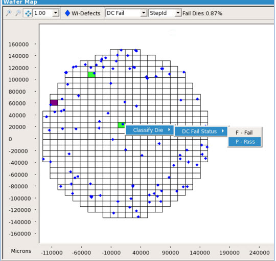

You can change a die’s
color by manually classifying the die in the Wafer Map.
Procedure
To change a wafer map die color, right-click
on the die and select a colored status. For example, a die is incorrectly
colored as Fail in the following figure. To correct the status,
right-click on that die and change the DC Fail Status to Pass.Figure 1. Manual
Classification of Dies in the Wafer Map
Once classified, the Wafer Map utility searches
for all defects inside that die and changes the DC Fail Status to
the new classification and changes the die color. This feature is
supported only for DC Fail Status. For more information on wafer
map die coloring, refer to “Wafer Map Coloring”.
Note: Dies are colored based on Fail dies.
No default colors are assigned for Pass status.